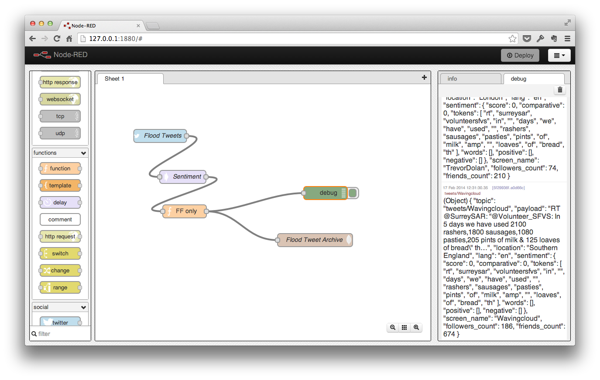

Compose in 2014 - Winter to Summer
At the start of 2014, Compose was called MongoHQ, a well-known and much relied on purveyor of fine cloud-based instances of MongoDB. Years of experience had honed our skills and we were ready to take the next step. For the first half of the year though we would be laying down the foundations, making our MongoDB offering better than ever and using our blog to disseminate knowledge. We start in January, as we roll out the first new feature of the year…
January – Launching The Second Factor
We added two factor authentication to our platform to let people secure their MongoDB databases more while on the blog we also…

* Talked about how we made Remote Working work for everyone.
* Showed how to love the Mongo shell and how to save private functions using it.
* Introduced people to Node.js and MongoDB and explained why and how Redis and MongoDB could work together.
February – Better connected
This month was all about the connections. In the blog we demonstrated experiments with the Internet of Things and MongoDB by building an Arduino based temperature sensor and logging its activity to MongoDB. That was followed by a look at how you could use Node-RED, a tool designed for IoT work, to connect your MongoDB to many other services.And then showed how to use Zapier and your MongoDB to plug your data into even more services. We also…
- Talked about the misperceptions of “Big Data” and how optimization can change how you grow.
We looked forward to MongoDB 2.6’s index intersectionIn March, we showed the world the future of cloud deployed databases as we rolled out our elastic deployments of MongoDB. These bring an auto-scaling, auto-backed-up platform to satisfy your database needs. We went into detail on how we scaled MongoDB in a later article. Elastic Deployments also expanded with us so Australia got them too. Other things that happened in March included…
Making the MongoDB oplog accessible so people could tap into the real time change stream from the database. We showed the details of how you could get at the oplog with Node.js and interpret that change stream. And because we like elegance, we showed a nicer way to consume the oplog too.
- Expanded upon how we remote worked with HipChat.
- Showed how not to pollute the pool in Node.js, took a look at the graphical database environment that is Robomongo and gave a tutorial on how to turn database alerts into Zapier events.
{kind=link}
April – MongoDB 2.6 Arrives
April saw the arrival of MongoDB 2.6 and we made it available on Elastic Deployments. We illustrated the power and the pitfalls in articles on 2.6’s improved bulk operations
* Two factor authentication, in the form of our own Authful API, was open sopurced.
* Elastic Deployments landed in Europe.
* On Demand Backups for Elastic Deployments were introduced for when you need a backup right now.
* The beta launch of Elastic Deployments on DigitalOcean.
* Our mission to explain the Oplog continued with a look at how you can use Meteor and Elastic Deployments together for real time web apps and a roundup of oplog accessing tools for Ruby, Go and Java.
* Faster update techniques for MongoDB 2.4 were illustrated for those not ready to upgrade.
{kind=link}
May – More 2.6
In May, we continued to detail the interesting things about MongoDB 2.6. We looked at the improved indexing, changes to the shell and tools and introduced the enhancements to the aggregation framework. The most extensive article on 2.6 was the deep dive into the new Bulk API which gave examples in Mongo Shell, Node.js, Ruby, Python and Java. We were all about the educating in May with articles on…
- How to use backups for performance by quickly cloning a database locally.
- How to not count and count to get a performance boost by pre-limiting queries.
- How to make your shell prompt compact and bijou
- How to use JavaScript to visualise database activity in a rolling graph.

We also rolled out Elastic Deployments in Oregon and talked about our favorite tools.
June – DigitalOcean leaves beta
At the end of the June, we were pleased to take the beta label off our DigitalOcean elastic deployments in DO’s NY2 datacenter and roll out the latest update, MongoDB 2.6.3 to Elastic Deployments, giving users the power to upgrade when they wanted to at the selecting of a dropdown and the click of a mouse. Meanwhile, on the blog we were covering all sorts of subjects…
- What are the pros and cons of GridFS on MongoDB and when should you use the large file storage mechanism.
- Structured database access with Mongoose and MongoDB.
- Keeping your storage usage down by sizing and trimming your MongoDB.
- Keeping your database performance up with best practice indexing.
- Using MongoDB’s full text search with Node.js to deliver a simple web-based scoring search application.
- Last month’s JavaScript visualisation was only a precusor to putting MongoDB in lights using an Arduino Uno and an RGB LED shield. An ideal addition to your physical dashboard.
Finally, we gave some insight into one of our internal processes, using the Pull Request as a conversation starter. That was an article that came out of the development work which would land with users in July…
July – The dawn of the new API
July opened with the beta release of a new REST API for the platform. Previously we’d allowed people to interact with the databases in deployment through a REST//content/images/2014/12/globalpizzavvpdzuflvnff.png)How we ran a remote global pizza party and the pitfalls that can open up.
- How Tablelist use our MongoDB deployments to keep your party going.
- How we now supported deployments on GoGrid.
- How our free sandbox is not like our paid-for Elastic deployments.
- News on the latest release of the Go MongoDB driver mgo.
- How Big Bobby Tables can get their own database.
We closed July with another new tool, the CLI tool which made the API available for users as shell commands without needing to write code in a particular language. All this development work was laying the foundation for the second half of the year… which we’ll come to in the next part of the annual roundup.